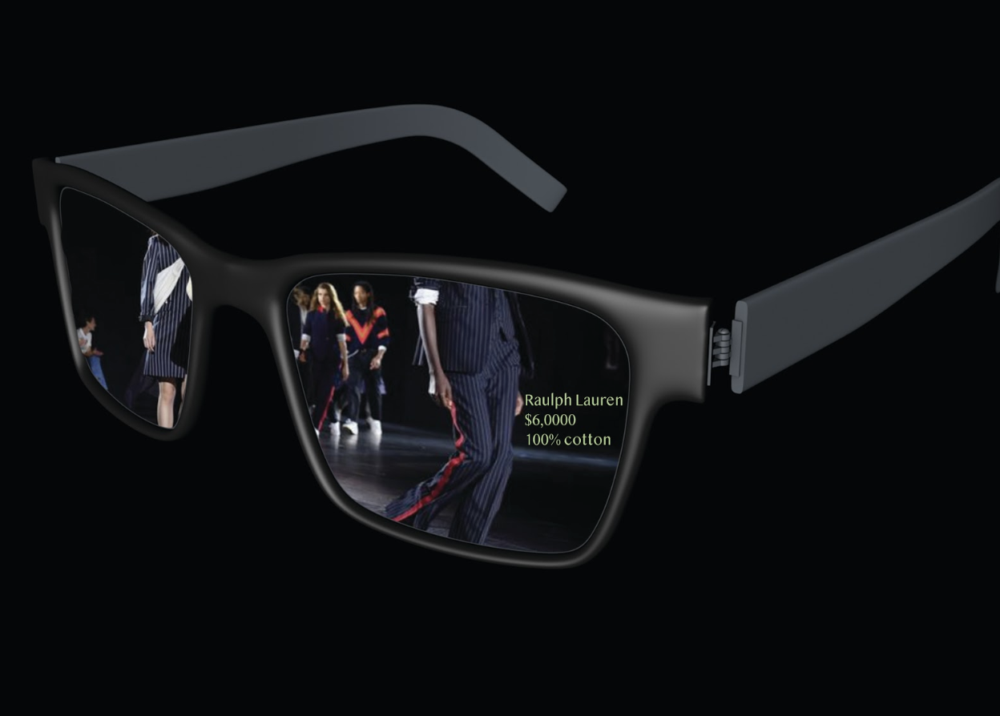

AR STYLE AURA
The concept was inspired by this idea I previously had where I created a photoshoped video for what I wanted my augmented reality filter to look like. I wanted to create a filter that scans clothing texture and colors, then creates an aura based on what you're wearing. The texture floats around the person and reacts and follows movement as an extension of the clothes you wear. It can be used to add emphasis while documenting clothing, which makes it great to advertise and capture brands and runway shows on social media. It differs from existing AR filters because currently it’s more facially focused but it will be interesting to see its focus shift to fashion.
Considerations
I was thinking about how could this be used to increase the experience or angagement at a runway show? It would be used for interactive runway show, documentation, and advertising. I was also thinking about the audience for the product, which would be people interested in fashion, technology, advertising and social media.
Design Values:
Fun, Futuristic, Minimal, Effective, Functional
AR GLASS
The AR glasses concept came from my previous exploration in my 2D study about AR and how it will be used in the future. My idea was that eventually everyone would wear there glasses I call AR glass, which function as a smart phone but all accessed through your glasses by using voice recognition. You will be able to see AR everywhere you go. At a runway show this AR can recognize the details about the graments being viewed. In the photo it recognizes price, fabric and brand.
How would this affect society?
The AR filter will create a shift in social media, marketing, advertising, privacy, and perception of reality. The AR Glass will also add a huge impact to the way we intereact with the social media and the real world.
OUTCOME
This filter was created using Spark AR. I wanted to visualize the concept of the fashion aura by wearing a red plaid jacket and the filter sends out red plaid squares around me. The surrounding environment is also red to create a monochromatic visual.
Future Iterations and research I hope to develop how to make filters more dynamic and be able to scan a body and float behind and in front of it.
MANIFESTO
In Augmented Reality: An Emerging Technologies Guide to AR, Kipper explains that “Virtual reality completely immerses a user inside a synthetic environment, while in contrast Augmented Reality takes digital information and overlays it in a real-time environment.” Currently it is most commonly used on Instagram and snapchat for friends and users to create fun ways to take photos and videos. Popular AR filter aesthetics have commonly expressed a futuristic approach to makeup and beauty, by using iridescent skin tones and shape shifting form and 3d makeup. AR filters started to gain popularity on snapchat and was added to Instagram. It is a new way of income for people to make these filters and has been an effective way to market products and brands due to its popularity. In a CNN article titled *Snapchat creators earn serious money making AR filters*, people can learn about different ways people are making money through making AR filters. One such case includes Rhonda Greene who earns extra income from creating filters for brands, such as a bridal shop in Detroit and an accessory line on Shopify. People have switched their focus to learning how to create these engaging filters for the future of AR. In the future, AR will become more widespread and used for far more than just social media sharing. We are currently seeing the beginning of its use for marketing strategies. In the future every brand, business and event, etc, will need to have an AR marketing plan in place. It will affect everything, such as fashion, beauty, business, food, events and more. Forbes article called *Retailers have a lot to gain from VR and AR*, lists ways in which AR will be engaged such as customized shopping experience, employee training, beauty industry and fashion and footwear. Recently in a Engadget article, Nike updates say that there will be an app released in AR to help customers find the right fit sneaker size. Nike has been trying various concepts with how to engage and improve customer experience with AR. These AR filters have been undergoing a strong amount of growth in the use of advertisement and social media marketing. In the article titled *From Hype to the rise of Augmented Reality in Marketing as an Engaging, Effective and Measurable Tactic*, It states that “AR campaigns can support the increase in brand recognition, engagement, conversion/sales and product information/try on”. Business are using it to promote their brands and campaigns or events. Columbia Records has been utilizing it recently to promote artists through Instagram content for artists that work under their label. AR filters are used and spread by posting onto people's stories where users can see it and download it to try it themselves. This is a great use of marketing in combination with AR filters. In the future, augmented reality will be a huge part of how social media will be used. It will be used for self-expression, comedy, art, or social commentary for any user to create and customize. AR will be used daily by users to express their ideas of personality and personal style and to depict the world around them. The methods of creating personalized AR will become simplified in apps we use. We will see reality represented in different ways. Social media and AR will be amplified and used daily to express creatively what is going on around them. It will become simplified to create unique AR experiences for users. Where simple buttons and sliders will allow people to adjust the look of the filter and how it is interacted with. Instantly, the filters can be made and shared in a couple mins. People can use the filters any way they choose and will soon wear glasses that allows them to see all the AR in the surrounding world. This will be seen in billboards, identification systems, status emoji updates in real time, filters can be applied as everyday looks. They will be incorporated in relation to our personal style and bring a new layer that will bring clothes to life by appearing around us daily as we wear AR glasses in the future. This will also eventually eliminate phone since the glasses will become this and u can see social media over layer of reality. The negative outcome is that it will be hard to know and regulate the real and fake as information become instantly available without effort. I hope that in this AR future, the creativity will be an explosion in dynamic personal style and can revive a unique touch to fashion and technology. I hope to see in used on the runway to engage with viewers in dynamic ways that will add to an experience and give us data like price and material of a garment when we view it in AR.
Citations
KIPPER, GREGORY. Augmented Reality: an Emerging Technologies Guide to Ar. BOSTON: SYNGRESS Publishing, 2013.
Yurieff, Kaya. “Snapchat Creators Earn Serious Money from Making AR Filters.” CNN. Cable News Network, August 13, 2019. [https://www.cnn.com/2019/08/13/tech/snapchat-lens-creators/index.html](https://www.cnn.com/2019/08/13/tech/snapchat-lens-creators/index.html).
Borst, Susan. “From Hype to the Rise of Augmented Reality in Marketing as an Engaging, Effective and Measurable Tactic.” IAB, June 5, 2019. [https://www.iab.com/blog/ar-for-marketing/](https://www.iab.com/blog/ar-for-marketing/).
Joshi, Naveen. “Retailers Have A Lot To Gain From AR and VR.” Forbes. Forbes Magazine, October 3, 2019. https://www.forbes.com/sites/cognitiveworld/2019/10/01/retailers-have-a-lot-to-gain-from-ar-and-vr/#4286e2ba7a1c.
Alvarez, Edgar. “Nike Uses AR to Help You Find the Right Fit for Your Sneakers.” Engadget, May 9, 2019. https://www.engadget.com/2019/05/09/nike-fit-augmented-reality-right-fit-size-shoes/.